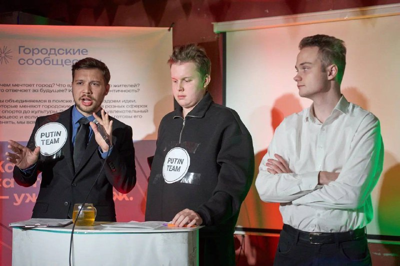

Сделано на Урале
Есть о чём
поговорить
Спорим по делу
Слушаем с интересом
Смотрим шире

Твой способ
быть в контексте
Выбирай, что ближе
Екатеринбург · открытый разговор
Разные взгляды
Одно место встречи
Мы собираемся, чтобы спорить по делу, задавать вопросы и понимать друг друга
О чём хочешь поспорить ты? ↗